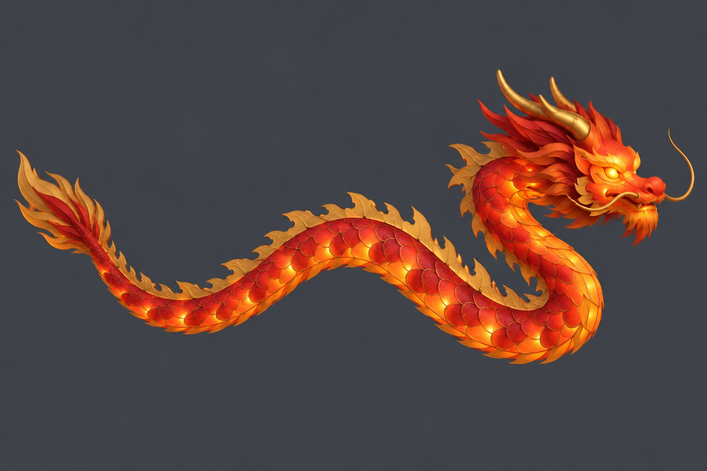
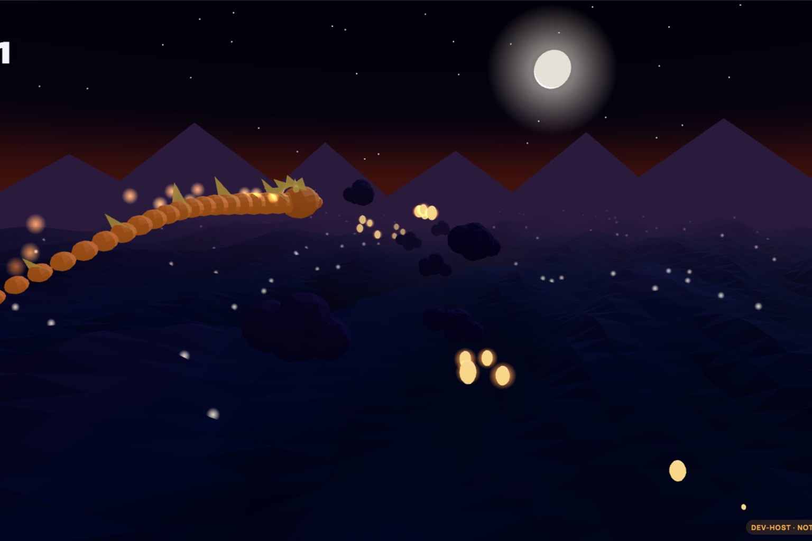
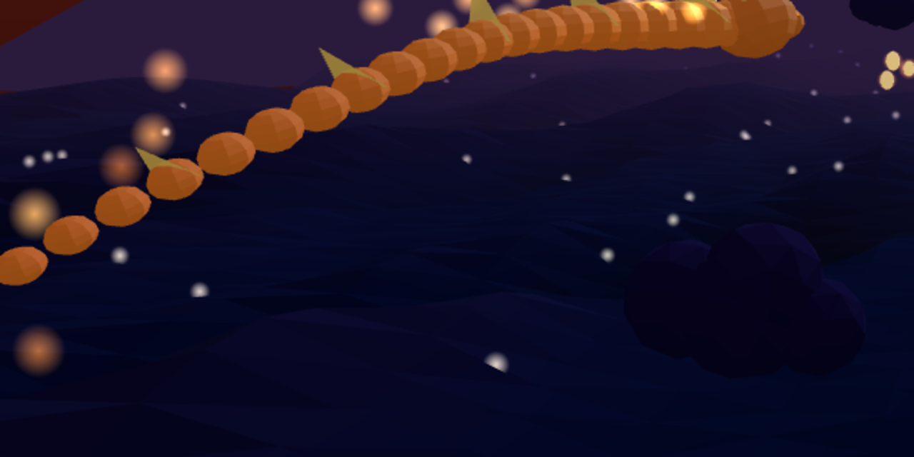
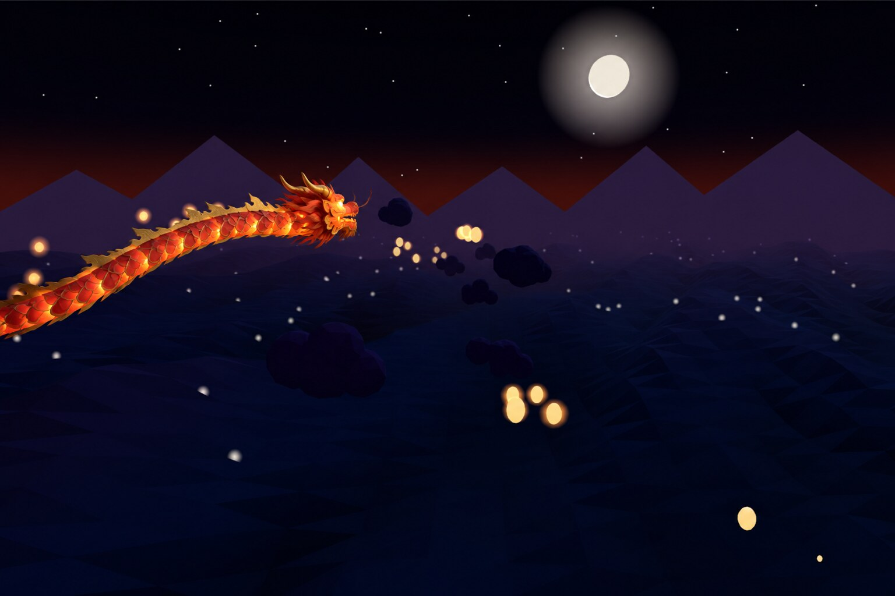
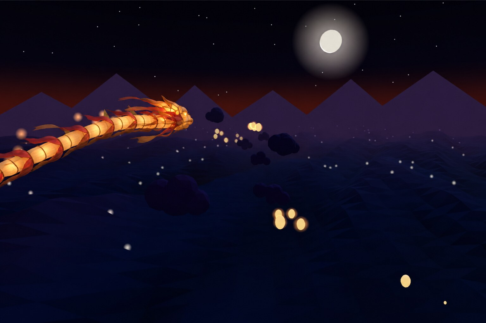
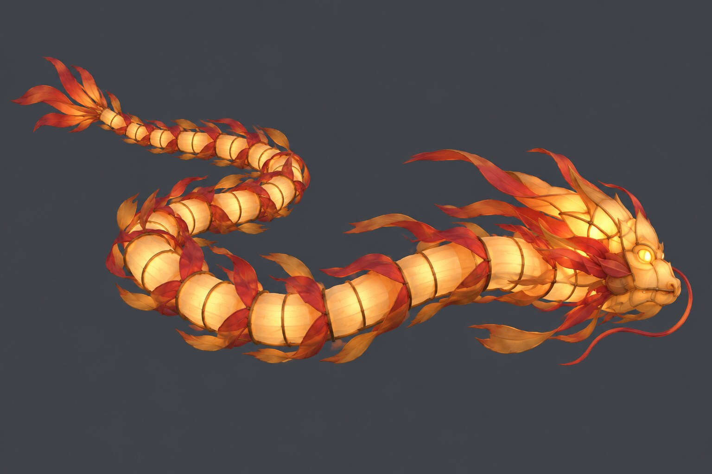
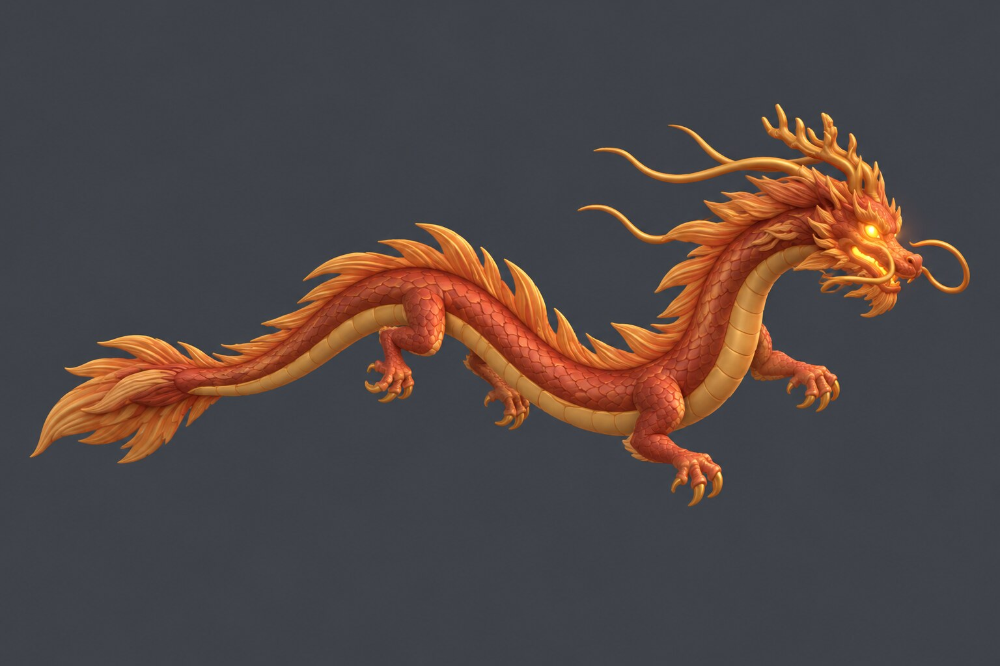

Дракон для Paper Dragon: три варианта
Доска выбора дракона. Выбор сделан: вариант A, итог в первой карточке. Ниже три варианта, из которых выбирали, и текущий кадр на момент выбора.
Итог: вариант A в игре (09.10.2026)
Костя выбрал A. Лист из четырёх частей нарисовал Codex, Tripo сделал модель за одну генерацию (30 кредитов, 420 → 390), Blender разрезал её на голову, сегмент, хвост и гребень, в игре они стоят на той же цепочке, что и раньше. Слева эталон, справа кадр из игры.



| Модель | Tripo HD Model H3.1, 941 892 треугольника → в игре 7 097, текстура 1024 JPEG, файл 232 KiB, бандл 1.02 MiB, проверка платформы PASS. |
| Части | рендер проверки: спереди, сбоку, сверху после резки и поворота. |
| Что осталось | Посмотреть на телефоне, сказать, что поправить: размер головы, частоту гребней, яркость свечения, окрасы. |
Сейчас в игре


A. Фестивальный дракон
Китайский танцующий дракон из лакированной бумаги и золота: резная голова с рогами и гривой, тело из перекрывающихся сегментов с чешуёй, золотой гребень по спине, хвост-пламя. Светится изнутри, как фонарь.

| Как делается | Один лист Tripo из четырёх частей: голова, сегмент тела, хвост, гребень. Blender режет и упрощает. В игре остаётся та же гибкая цепочка, но из настоящих частей. |
| Кредиты Tripo | Около 30–40 за одну генерацию. |
| Риск | Низкий. Стыки сегментов прячутся перекрытием. |
B. Шёлковый фонарь
Дракон с праздника фонарей: тело из полупрозрачных шёлковых фонарей на бамбуковом каркасе, каждый светится изнутри; голова-фонарь с горящими глазами, ленты и кисточки вместо гривы и плавников.


| Как делается | Один лист Tripo из четырёх частей: голова, фонарь-сегмент, хвост, ленты. Свечение изнутри делается материалом в игре, оно же меняет цвет по окрасам. |
| Кредиты Tripo | Около 30–40 за одну генерацию. |
| Риск | Низкий. Самый заметный ночью, лучше всего связан с темой фонариков. |
C. Небесный змей
Цельный скульптурный восточный дракон: рельефная чешуя и брюшные пластины, оленьи рога, усы, четыре небольшие лапы, гребень из мягких плавников по хребту, хвост с кисточкой. Тёплая керамика с золотом, свет из пасти и глаз.

| Как делается | Одна цельная модель Tripo. Blender выпрямляет тело, ставит позвоночник из костей и веса. В игре кости идут по следу головы, тело гнётся сплошной волной. |
| Кредиты Tripo | Около 30–40 за одну генерацию. |
| Риск | Средний. Выпрямление и швы текстуры требуют проверки, работы на полдня больше. Выглядит серьёзнее всех. |